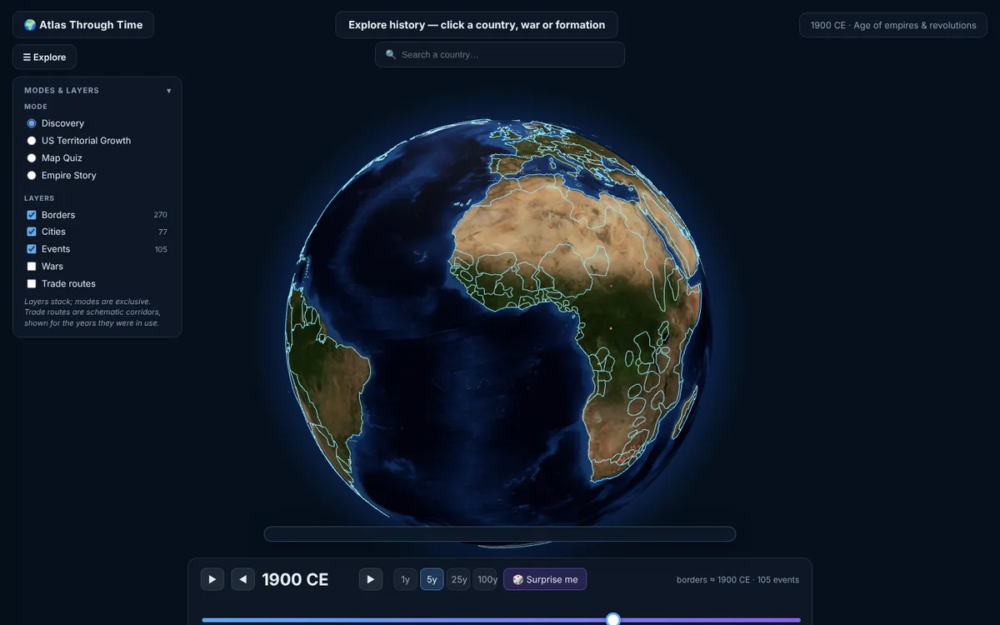
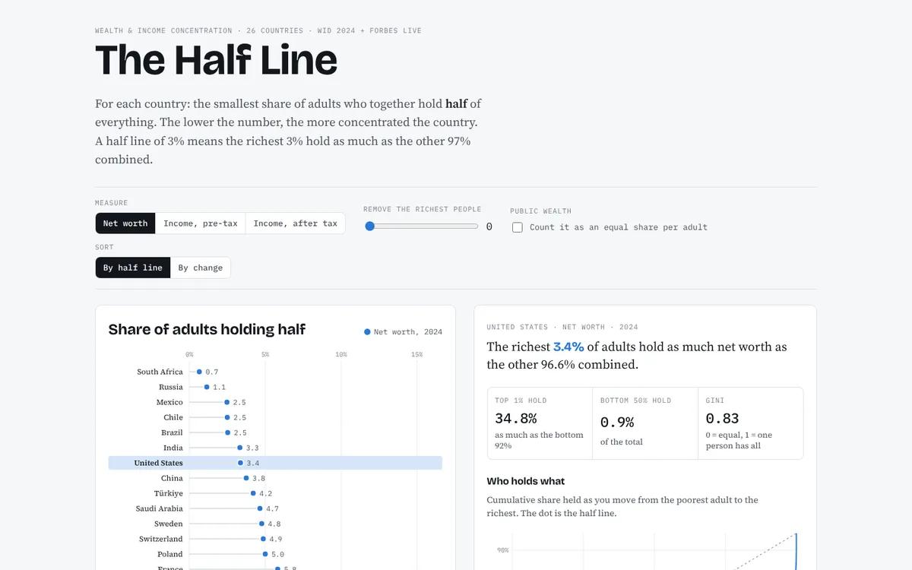
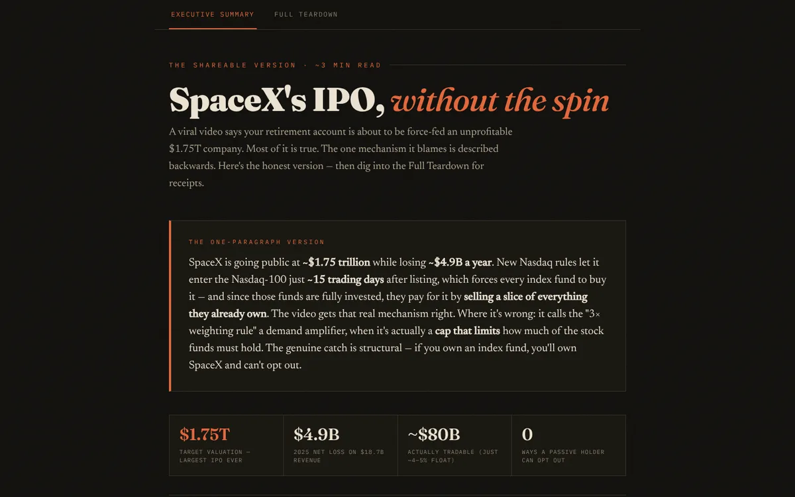
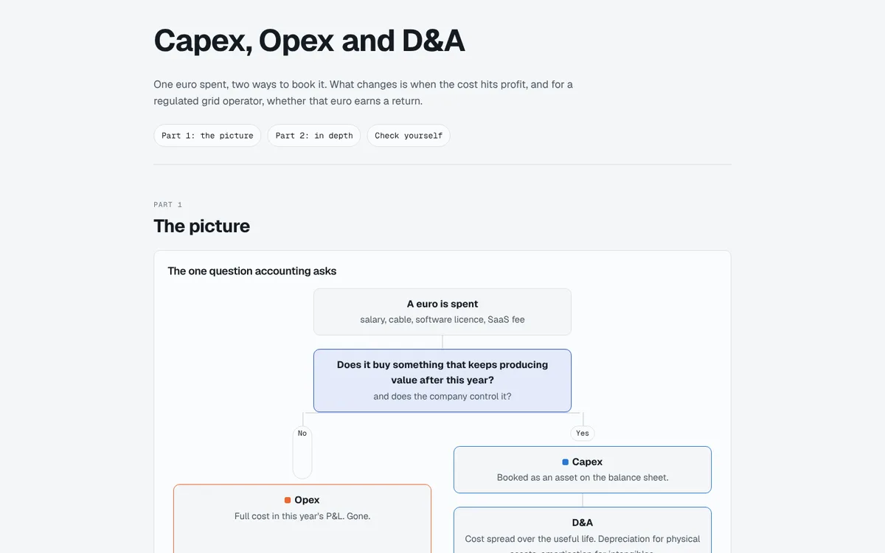
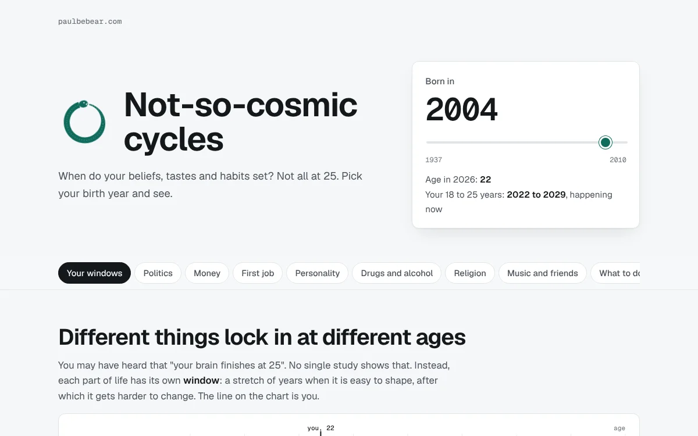

Markets, money and history, made explorable.
Data science and international markets at Albert School and Mines Paris. Based in Madrid.

Work

The Half Line
How few people hold half of everything, in 26 countries. Toggle wealth or income, remove billionaires, or count public wealth.

SpaceX's IPO, checked
A viral video on the SpaceX listing, claim by claim. Most of it holds. The index mechanism it blames is described backwards.

Capex, opex and D&A
When a cost hits profit, with live charts. Ends with why regulated grid operators prefer to capitalise.

Not-so-cosmic cycles
When beliefs, tastes and habits set, and how each generation answers the last. Pick a birth year and see what your 18 to 25 window contained.
Now
Indexable
indexable.proStructured data for restaurants and bars in Madrid, so search engines and AI assistants read their menus correctly.
A site template for tattoo artists
In progressOne page that does the job: real portfolio photos, booking, aftercare.
How power grids work
NextA series of interactive explainers on electricity grids and power markets.
About
I grew up in New York with French parents, worked in hospitality in New York, Miami, Paris and Belgium, and now study data and markets.
I'm based in Madrid, interning at SENSE Reply on AI for energy systems and building Indexable on the side. I make these pieces to understand a subject properly, then publish them so others can use them too.
- Energy and grids
- AI systems
- Markets
- History and geography
- Data visualisation